해당 국민취업지원제도 상담진행 프로세스 설명은 신입 상담사분들의 초기 원활한 업무 적응을 위한 목적으로 제작되었으며, 일부 내용은 지역별, 지점별로 상이할 수 있음을 알립니다. (작성 기준 : 2025년도 국민취업지원제도 성남지점)
해당 내용을 참고하시되 상담 관련하여 선임 및 지점관리자로부터 확인과 교육을 꼭! 받으시기 바랍니다.
1. 참여자 배정
참여자 배정시 참여자의 배정일에 맞춰 인정통지일 수정(배정일=인정통지일 일치화)
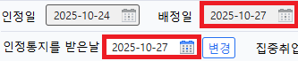
[배정일]에 맞춰 [인정통지를 받는날]을 변경 후 [변경]버튼 클릭
참여자 배정 된 담당자가 되도록 배정받은 당일 혹은 2일 이내 참여자에게 국민취업지원제도 참여 승인 및 배정사실 전달
초기상담일정 참여자와 조율하여 정함(상담사의 상담일정을 고려)
1-1. 참여자 관리 사이트 수정
배정받은 참여자는 http://jobmoaa.mycafe24.com/login.do [잡모아 참여자 관리 사이트]에 [신규 참여자]에서 등록 진행
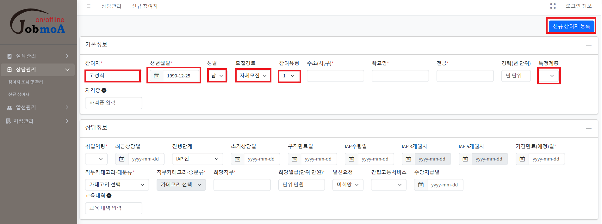
이름, 생년월일, 성별, 모집경로, 유형, 특정계층여부(2유형만) 필수 체크 후 [신규참여자등록]
예시) 초기상담 일정에 따른 참여자에게 카톡안내
안녕하세요.
[국민취업지원제도] 민간위탁기관 (주)잡모아 성남지점 상담사 고성식입니다.
김OO님 00월 00일(월) 00시에 상담 예약되었습니다. 상담시간에 방문하셔야 대기 없이 상담이 가능합니다.
문의사항 및 일정변경요청은 ☎ 031-464-8886(내선973)으로 연락주세요. 감사합니다.
■ 오시는길 : [지하철 모란역 1번출구 인근]
주소: 성남시 중원구 광명로5, 모란 성남동메디칼센타 5층 503호
(주)잡모아 성남지점 사무실 지도 위치안내:
https://url.kr/b1lzi7
(출처: 네이버지도)
*주의사항
IAP 수립 전 3번의 상담이 참여자의 인정통지일로부터 1개월 이내 이루어져야 함
(상담간격은 영업일 기준으로 최소 하루의 간격으로 진행 예) 월-수-금 OR 수-금-월)
**각 고용센터별로 상담기한 기준 및 상담진행 가능 주기등은 다를 수 있으므로 선임 및 지점관리자에게 확인 필요!!!
2. 초기상담
*상담시 필요서류 지참: 초기상담일지(1유형/2유형)
(내담자 방문시)
[IAP등록/관리]-[상담정보]에서 [신규작성] 클릭
“상담시간 0000~” 입력 후 저장은 누르지 말 것 <- 중요!
>>> 상담진행 중에 신청취하사유 확인시 상담일지가 저장되어 있으면 취하가 불가하기 때문!!
*예시 참조
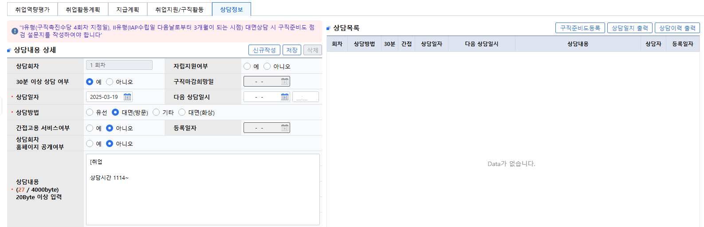
(상담진행 중)
상담 종료 시점에 참여자와 다음 상담일정 및 직업선호도 검사 과제 부여 및 설명
**다음 방문일정은 무조건 지정!!!!
<<< 참여자가 나중에 일정 확인해보고 알려준다고 하더라도 일단 일정 잡은 후에 일정 변경 원하면 알려달라고 안내
(상담완료 후)
종료시간 확인하여 저장(신청취하 사유 없는 경우)
참여자가 초기상담 중 작성한 역량평가지 및 상담사가 확인한 내용에 따른 취업역량평가 등록
(역량평가 등록 및 취업역량평가 부분 작성)
[IAP등록/관리]-[취업역량평가]-[등록]하여 저장
구직신청 유형분류 판단 기준
*취업애로요인은 상담사 판단에 따라 구직성공을 위해 참여자에게 더 필요한 부분이 있다고 판단되는 부분에 체크
*취업지원을 위한 상담전략 부분 작성은 아래 참고
■참여동기(예시)
-자체모집
-ㅇㅇㅇㅇ대학교 ㅇㅇ디자인공학과 졸업(2000.00)
-희망직무는 시각디자이너 희망함, 직무경력은 0년 있음
-희망직무에 따른 채용정보 제공과 역량강화에 도움을 받기위해 참여함
■유형분류 및 근거(예시)
-해당참여자는 시각디자이너를 희망하여 역량을 강화하고자 국민취업지원제도에 참여함
■상담목표 및 전략(고정)
직업심리검사를 통해 흥미유형에 대한 자기 이해를 높이고 희망직종의 훈련과정 및 채용정보 탐색을 통해 준비해야 할 것들을 파악하여 취업지원 계획을 수립할 예정임
적극적 구직활동을 독려하고 이력서와 자기소개서 클리닉을 통한 구직기술 향상 지원, 채용정보 제공 및 알선을 통해 취업으로 이어질 수 있게 진행할 예정임
2-0. 구직신청서&인정통지서 출력
2-0-1. 구직신청서
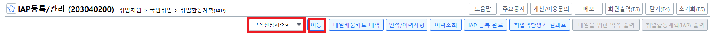
-참여자 [IAP등록/관리]화면에서 [구직신청서 조회] 선택 후 [이동] 클릭
해당 화면이 뜨면 참여자의 주소지, 핸드폰, 메일주소 입력 후 우측상단에 [등록]클릭
아래로 스크롤하면 [구직마감 희망일]에서 [12개월] 클릭 후 맨위 상담 [수정]버튼 클릭
이후 맨 아래로 스크롤하여 [구직신청서 출력] 클릭 후 개인정보 표시 “예”선택 후 모아찍기로 한 장짜리로 출력
*구직신청서 조회시 주소지 등 이미 기입되어 있는 경우 ①을 건너뛰고 ②,③ 진행하면 됨
2-0-2. 인정통지서
-해당 참여자 [수급자 조회]화면에서 검색 후 [인정통지서 출력] 클릭하여 출력
2-1. 1유형 초기상담일지 입력(예시)
[취업활동계획수립기간 / 초기상담]
상담시간 1000~1048
[수급자 자료수집 정리]
-참여경로 : 자체모집
-수급자격 인정 통지일 : 2025.00.00
-취업역량평가 : 높음(C유형)
-가족사항 : 1인 가구
-최종학력 : 00대학교 000학과 졸업(2000.00)
-과거직장경력 : 2년이내 디자인 직무로 경력 8개월 있음. 2년 이전 3년반의 디자인 경력 있음
-직무역량 및 자격사항 :없음
-취업 희망직종 및 근로조건 : 시각디자이너 / 마케팅 디자인 관련 희망
-직업훈련 이력 : 최근 2년 이내 이젠IT아카데미에서 웹&앱 디자인 과정 수료한사실 확인함
-취업지원 서비스 참여 이력 : 2022년도 국민취업지원제도 참여이력 있음(종료사유 : 취업)
[국민취업지원제도 진행 및 유의사항 안내]
-취창업 확인 및 프로그램 진행절차 안내
-취업지원서비스 운영기간, 수당, 유의사항 안내
-3,4회차 기간과 6회차 기간 중 대면상담 진행에 대해 안내함.
-취업지원서비스 기간 내에 최종 3개월은 집중 취업알선 기간 운영임을 안내함.
-수급자격 인정 철회 및 취업지원 종료 안내
-내일을 위한 약속 및 개인정보 수집, 이용, 제공에 대한 동의서 안내 서명
-국민취업지원제도와 연계된 프로그램(집단상담, 취업특강, 일경험 등) 안내
-청년내일채움공제, 청년일자리 도약 장려금, 고용촉진장려금 안내
-구직등록만료일 안내 및 재신청 방법 설명, 수급자 동의하에 구직유효기간을 연장함을 안내
[상담 내용]
-상기수급자는 시각디자이너 / 마케팅 디자인 관련을 희망하며 역량강화를 위한 도움을 받고자 국민취업지원제도에 참여함
[과제 및 다음 회차 상담을 위한 준비활동]
-과제 : 워크넷 직업선호도검사L형 실시
-심리검사 유의사항과 실시방법을 안내하였음.
2-2. 2유형 초기상담일지 입력(예시)
[취업활동계획수립기간 / 초기상담]
상담시간 1258~1351
[수급자 자료수집 정리]
참여경로 : 센터배정
수급자격 인정 통지일 : 2025.01.10
취업역량평가 : 높음(C유형)
가족사항 : 2인가족(본인, 배우자)
최종학력 : ㅇㅇ대학교 ㅇㅇ디자인학과 졸업(2000.00)
과거직장경력 : 웹디자인(7년), 건설현장지원 업무(2년) 있음
직무역량 및 자격사항 : 최근 2년 이내 취득한 자격증, 참여한 직업훈련, 인턴 및 일경험 프로그램 참여 없음.
취업 희망직종 및 근로조건 : 건축설계 및 관련 계통
직업훈련 이력 : 수료이력은 없음, 현재 BIM 훈련 참여중
취업지원 서비스 참여 이력 : 실업급여 2000.00.00~2000.00.00까지 수령.
[국민취업지원제도 진행 및 유의사항 안내]
취창업 확인 및 프로그램 진행절차 안내
취업지원서비스 운영기간, 수당, 유의사항 안내
IAP 수립일 다음날로부터 2~3개월 이내, 5개월차 대면상담 진행에 대해 안내함
취업지원서비스 기간 내에 최종 3개월은 집중 취업알선 기간 운영임을 안내함
수급자격 인정 철회 및 취업지원 종료 안내
내일을 위한 약속 및 개인정보 수집, 이용, 제공에 대한 동의서 안내 서명
국민취업지원제도와 연계된 프로그램(집단상담, 취업특강, 일경험 등) 안내
청년일자리도약장려금, 고용촉진장려금 안내
구직등록만료일 안내 및 재신청 방법 설명, 수급자 동의하에 구직유효기간을 연장함을 안내
[상담 내용]
상기수급자는 ㅇㅇ대학교 ㅇㅇ디자인학과 졸업(2000.00)으로 희망직무를 탐색중임
직업훈련, 구직정보 획득 등 전반적인 취업활동에 대한 도움을 받기 위해 국민취업지원제도에 참여하였다고 함
앞으로 상담방향 : 직업심리검사를 통해 자기에 대한 이해를 높이고 직무탐색 및 채용정보 검색을 통해 취업계획을 수립하기로 함[과제 및 다음 회차 상담을 위한 준비활동]
-과제 : 직업선호도검사L형 실시
-심리검사 유의사항과 실시방법을 안내하였음
참여자에게 2회차 상담진행 및 진행과제 카톡안내
안녕하세요.
[국민취업지원제도] 민간위탁기관 (주)잡모아 성남지점 상담사 고성식입니다.
ㅇㅇ님 00월 00일(월) 10시에 상담 예약되었습니다. 상담시간에 방문하셔야 대기 없이 상담이 가능합니다.
문의사항 및 일정변경요청은 ☎ 031-464-8886(내선973)으로 연락주세요. 감사합니다.
방문 전 과제:
1)직업선호도 검사 L형
https://www.work.go.kr/consltJobCarpa/jobPsyExamNew/jobPsyExamList.do
2-3. 참여자 관리 사이트 수정
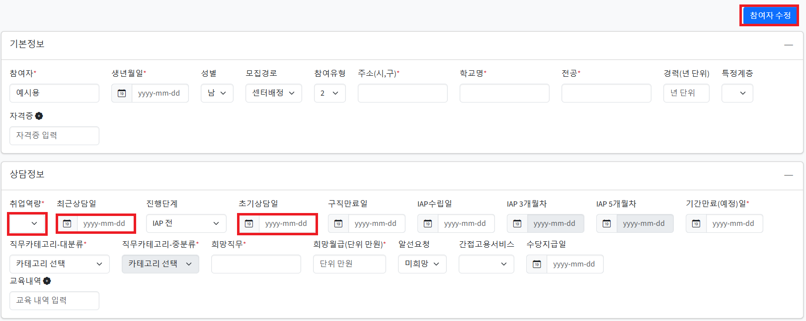
http://jobmoaa.mycafe24.com/login.do [잡모아 참여자 관리 사이트]에서 초기상담진행한 참여자이름을 클릭한 후에 취업역량, 최근상담일, 초기상담일 입력 후 [참여자 수정] 클릭
*취업역량 부분 작성 시 주의사항!!
>>> *높음=D / *보통=C / *낮음=A or B
3. 직업심리검사 해석
참여자 사전부여된 과제 이행 상담방문 전 필수로 확인
>>> 안되어 있는 경우, 바로 연락하여 정해진 방문일정 전에 완료 가능한지 여부 확인 후 필요시 상담일정 변경(일정 변경 시 해당 내용 상담일지 기입)
선임 및 지점관리자를 통해 심리검사 해석방법 숙지한 상태로 상담진행하여 내담자에게 결과지 해석 및 안내
2) 2회차 대면상담 과제부여
심리검사 결과지 해석 완료 후 과제부여 안내 및 설명 진행
3페이지 중 1,2페이지는 필수 진행(자세히 쓸 필요는 없음을 안내)
3페이지의 경우 훈련참여를 희망하는 경우 훈련기관 방문 및 상담진행하여 [훈련과정탐색표]를 제공받아 자필로 작성해야 함을 안내
상담 종료 시점에 참여자와 다음 상담일정 조율(필수!)
3번째 방문상담시 과제수행제출과 통장사본이 필요함을 안내하고 통장사본은 모바일 은행 어플 사용하는 경우 3번째 방문상담시에 캡처 후 카톡으로 전송을 요청
3) 구직준비도 점검 체크리스트
혼자 작성하기보다는 참여자와 함께 상담사가 작성
해당 결과에 대해서는 간단하게 2회차 대면 상담일지에 기재.(상담일지 작성 예시문 참고)
3-1. 직업심리검사 해석 상담일지 입력(예시)
[취업활동계획수립기간 / 직업심리검사해석]
상담시간 1315~1347
[직업선호도검사 L형 결과 해석]
직업선호도검사는 개인의 관심과 흥미, 성향, 그리고 생활경험을 측정하여 적합한 직업을 안내하는 검사이고 흥미검사, 성격검사, 생활사검사로 구성되어 있음을 설명함
1.직업흥미검사 해석(흥미검사 유형 : AR)
- 육각형 모양이 예술형 현실형에 치우친 모양이고 크기가 크므로 특정 분야에 대한 관심이 뚜렷한 편임을 설명함
- 예술형은 창의적이고 변화를 추구하는 일을 좋아하고 현실형은 활동적이며 실물적인 일을 좋아하는 성향임을 설명함
2. 성격검사 해석
- 5가지 요인중 가장 높게 나온 건 호감성이고 가장 낮은 건 외향성임
- 호감성은 타인과 편안하고 조화로운 관계를 유지하는 정도임을 설명함
- 외향성은 타인과의 상호작용을 원하고 타인의 관심을 끌고자 하는 정도임을 설명함
- 5가지 성격요인의 하위요인 중에서 70점 이상 높게 나온 건 도덕성, 타인에 대한 배려와 수용성임
3. 생활사검사 해석
- 9가지 요인 중 예술성이 가장 높고 두번재로 높은건 운동선호임
- 예술성은 예술적인 자질, 경험 및 관심 정도임을 설명함
- 운동선호는 운동에 관한 선호와 능력 정도임을 설명함
[상담사의견 / 구직준비도 점검 체크리스트]
- 상담 내용 정리 : 상기수급자는 현재 희망직무로 개발자를 희망함
- 상기 수급자는 특별한 애로사항이나 호소문제는 없음을 확인함
- 참여자의 초기상담 역량평가 및 구직준비도 점검 체크 진행결과 적극적인 구직의지를 가지고 있으며 이미 직무에 필요한 교육과정 수료 및 포트폴리오가 준비되었음에 따라 즉시 취업을 위한 서비스 제공이 필요하다고 판단하여 빠른취업준비형으로 분류함
- 진로상담 및 과제에 대한 상담진행함
- 직업 관련 심리적 속성 파악 후 적합한 직업선택을 위한 정보제공 예정임을 안내함
[과제]
- 고용24에서 훈련과정 탐색해 보기
- 참여자 직업목표설정 분석과 희망직무에 대한 채용정보를 검색해 볼 수 있도록 안내함
- 진로설정 및 취업에 도움이 되는 취업지원 서비스를 알아볼 수 있도록 다시 안내함
이후 [IAP등록/관리]-[취업지원/구직활동]-컨설팅서비스에 직업심리검사해석 진행 내역 추가
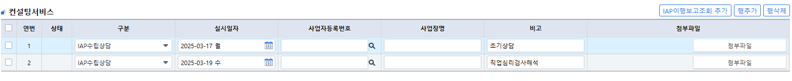
참여자에게 다음 상담일정 카톡전송
안녕하세요.
[국민취업지원제도] 민간위탁기관 (주)잡모아 성남지점 상담사 고성식입니다.
조ㅇㅇ님 00월 00일(금) 00시에 상담 예약되었습니다. 상담시간에 방문하셔야 대기 없이 상담이 가능합니다.
문의사항 및 일정변경요청은 ☎ 031-464-8886(내선973)으로 연락주세요. 감사합니다.
방문 전 과제:
1)활동지: 직업목표설정 분석하기/채용공고 탐색하기
*워크넷
https://www.work.go.kr/seekWantedMain.do
*잡코리아
https://www.jobkorea.co.kr/
*사람인
https://www.saramin.co.kr/zf_user/
*인크루트
https://www.incruit.com/
*원티드
https://www.wanted.co.kr/jobsfeed
*점핏
https://www.jumpit.co.kr/
*게임잡
https://www.gamejob.co.kr/main/home
- 카톡 안내 시 참여자의 희망직무에 맞춰 다양한 채용공고를 찾아 볼 수 있도록 많은 사이트를 제시해 주는 것이 참여자 신뢰를 얻는데에 도움이 될 수 있음(작성자 개인 의견).
3-2. 참여자 관리 사이트 수정
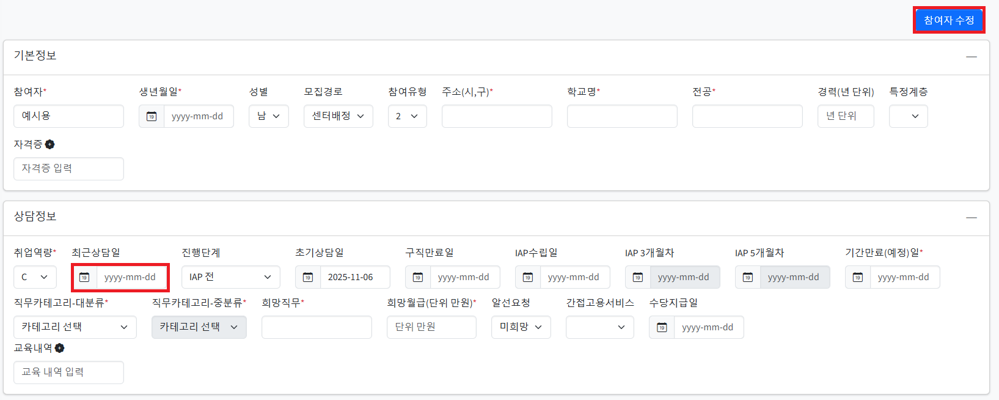
http://jobmoaa.mycafe24.com/login.do [잡모아 참여자 관리 사이트]에서 참여자 이름 클릭 후, [최근상담일] 변경 후 [참여자 수정] 클릭
4. IAP 수립(3번째 방문)
*상담시 필요서류 지참:
-1유형
구직촉진수당신청서
소득신고서
가족수당신청서(해당자만)
취업활동계획서(상담진행중 희망조건 설정 완료 후)
-2유형
참여수당신청서
취업활동계획서(상담진행중 희망조건 설정 완료 후)
(상담진행중)
3번째 방문 상담시 IAP 등록 및 취업활동계획 수립위한 희망직무 등 변경 필요
고용24(https://www.work24.go.kr/cm/main.do#none) 접속하여 참여자 간편인증을 통한 참여자의 아이디로 로그인
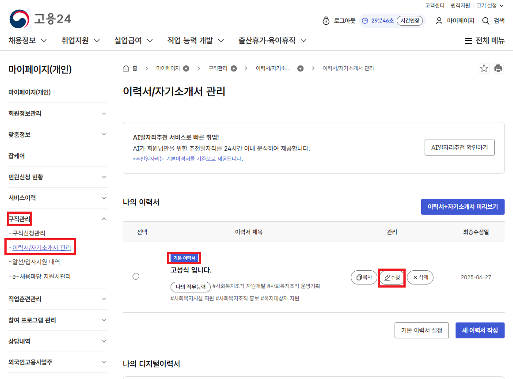
참여자와 협의하여 희망직무, 희망지역, 고용형태, 희망임금, 희망 근무시간을 지정하여 기입한 후에 맨아래로 스크롤하여 [이력서 작성완료] 클릭
상담실에서 해당 내용 완료 후 참여자에게 수당신청서, 소득신고서(1유형 소득발생여부 상관없이 필수 작성), 만족도 조사 참여 안내
참여자 통장사본을 전달받고 기다려달라고 안내 후 전산상 IAP 취업활동계획 작성 진행
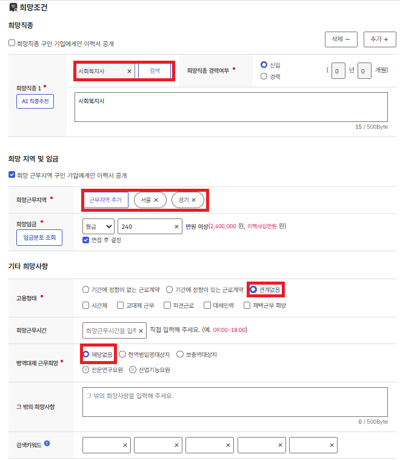
※주의사항
희망직무 설정시 최대한 범위를 넓혀서 잡을 것 예시) UX/UI 디자이너 희망자는 해당 직무와 병행 가능한 웹 디자이너 추가
인사 사무원 희망자의 경우 총무 및 일반 사무원/회계 사무원 추가
희망지역은 서울/경기를 기본으로 하여 그보다 범위를 넓히되 되도록 좁히지는 말 것 (인천의 경우 인천을 기본으로 포함하여 추가 지역 설정)
-> 참여자가 구단위로만 구직활동 희망하는 경우에도 되도록 최소한 시단위로 잡아야 함
-> 희망지역 설정은 넓게 잡되 채용정보 제공시 원하는 실제 희망지역을 반영하여 정보제공 할 것임을 안내
고용형태도 직무의 특성에 따라 계약직 후 정규직 전환 등도 지원 및 제공 가능할 수 있도록 “관계없음”으로 설정
소득신고서 작성 전에 1회차 지원대상기간에 맞춰 소득발생내역 확인을 꼼꼼히 할 것!
(1) IAP수립 위한 설정 진행하면서 오른쪽 창에서 [근무이력]에서 [고용보험 가입이력], [고용보험 일용근로이력] 확인 진행
=>최근에 근로한 이력이 있는지, 입금이 지원대상기간에 발생했는지를 확인하는 작업
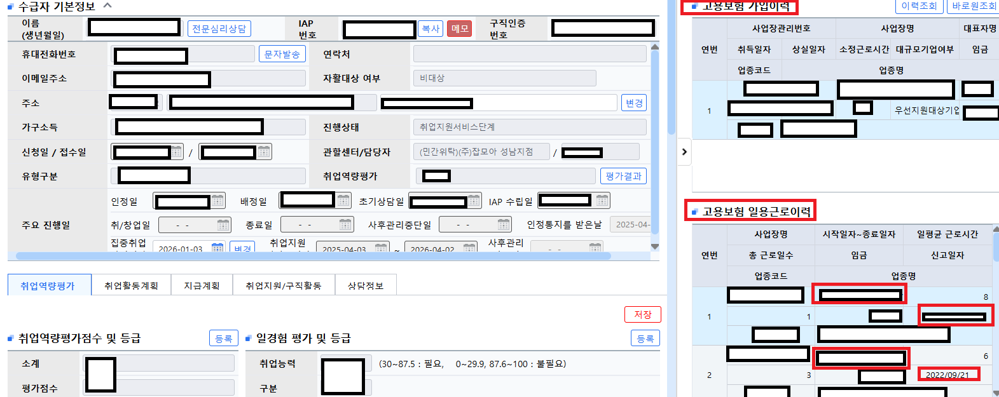
*붉은색 박스 확인, 검은색은 개인정보 보호위한 비공개 조치
(2) 내일배움카드를 통한 140시간 이상의 훈련참여자의 경우 오른쪽 창에서 [훈련]에서 [훈련장려금 지급내역] 추가 확인 진행
=>훈련장려금도 소득신고 대상이 되는 금액이므로 확인이 필수(취업지원프로그램)
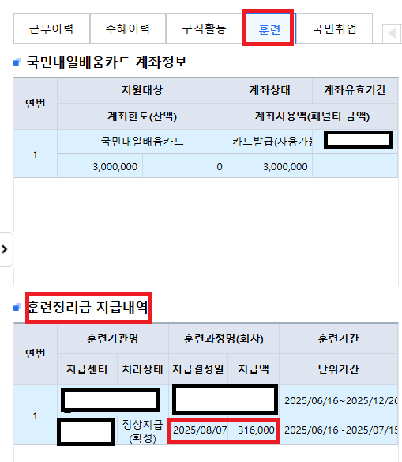
*붉은색 박스확인, 검은색은 개인정보 보호위한 비공개 조치
4-1. 1유형 취업활동계획 수립(IAP 수립)
-[IAP등록/관리]-[지급계획]에서 [행추가]☓6회 클릭을 통해 1회차부터 6회차까지 구직촉진수당 지원대상 기간 우선 확인
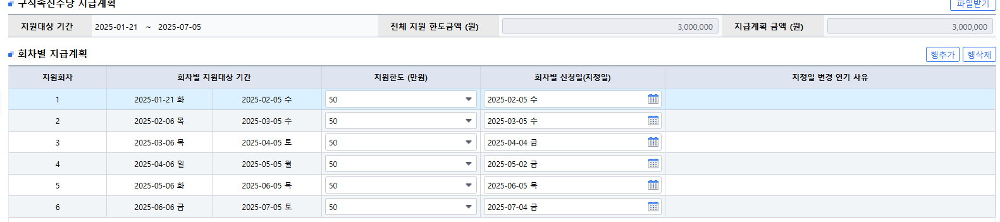
-회차별 신청일(지정일)이 주말, 공휴일인지 확인 후 주말/공휴일에 해당되면 영업일(평일)로 날짜를 당겨서 지정>>>지역별 상이하므로 각 선임 및 지점관리자에게 꼭 확인!
-확인된 지정일/지원대상 기간에 맞춰 구직촉진수당 수급위한 구직활동 및 서비스종료일까지의 취업활동계획을 설정
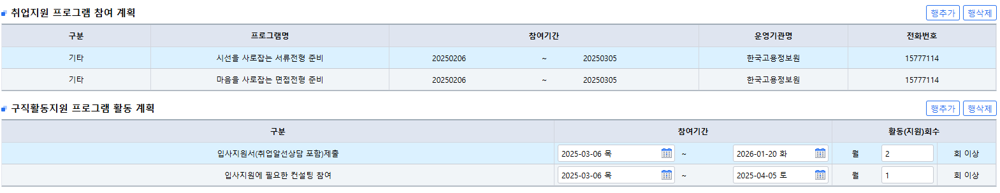
4-1-1. 구직촉진수당 지급조건(구직활동 2회 이상)설정 기준
✓ 구직촉진수당 지급 요건은 각 회차별 기간마다 구직활동 2회 이상에 해당되는 구직활동으로 잡아야 함
*구직활동 2회에 해당되는 활동(2025년도 업무매뉴얼 P.176~181)
-> 지원대상기간내 10일 이상의 훈련을 80% 이상 출석
-> 지원대상기간내 입사지원 2회
-> 2일 이상의 집단상담 프로그램 수료(수료일 기준)
*구직활동 1회에 해당되는 활동(2025년도 업무매뉴얼 P.176~181)
-> 지원대상기간내 10일 미만의 훈련을 80% 이상 출석
-> 입사지원 컨설팅 1회
-> 입사지원 1회
**상기 내용에 기재하지 않은 구직활동 인정기준은 해당년도 매뉴얼을 확인.
✓ 처음으로 1유형 구직촉진수당 지급계획 및 주기 설정하는 경우,
꼭 반드시 필수로 선임 및 지점관리자에게 확인 요청 후 진행!!
4-1-2. 훈련참여 여부에 따른 설정방법 예시
✓ 훈련참여자의 경우
-회차별 지원대상상기간내 훈련일정이 10일 이상의 경우 구직활동 2회로 인정
-회차별 지원대상기간내 훈련일정이 10일 미만의 경우 구직활동 1회로 인정
*훈련참여자들은 특히 지원대상기간 내 10일 이상의 훈련참여시에는 입사지원은 되도록 하지 않도록 설정 주의
*입사지원서 컨설팅은 참여자 희망 혹은 상담사 판단하에 훈련 출결에 영향을 끼치지 않는 전제하에 진행 가능,
*지원대상기간내 10일 미만의 훈련자의 경우 2회차면 온라인교육 1회이상 수료 설정
*지원대상기간내 10일 미만의 훈련자의 경우 3회차 이후면 입사지원컨설팅1회(1회만) OR 입사지원서제출 1회 설정
✓ 직업훈련 미참여자 혹은 미참여 기간의 경우
-2회차 지원대상기간에는
[기타-시선을 사로잡는 서류전형 준비][기타-마음을 사로잡는 서류전형 준비]로 2회차의 기간내 진행할 수 있도록 설정
-3회차 지원대상기간에는 입사지원제출 2건, 이력서컨설팅 1건으로 설정
(필수방문이 이루어져야 하는 시기임에 따라 방문시 컨설팅을 함께 진행할 수 있도록)
-이후 4,5,6회차 서비스 종료일까지 입사지원서 제출 2회 진행으로 설정
4-1-3. 취업활동계획서 작성완료 및 출력하기
-위에 내용을 참고하여 [취업활동계획]과 [지급계획] 작성이 완료되면, 우측 상단 [IAP 등록 완료] 클릭 이후 활성화된 [취업활동계획(IAP)출력]을 클릭
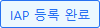
IAP 등록 완료 (image16.png)
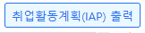
취업활동계획(IAP) 출력 (image17.png)
-인쇄하기->옵션->모아찍기, 가로 선택 후 확인->확인 눌러 출력
-참여자의 통장사본(파일로 받은 경우)까지 출력하여 상담실 복귀
-취업활동계획서상 수립된 내용과 지원대상기간, 지정일 안내
-이후 미완성된 수당신청서, 소득신고서 작성 완료 및 출력된 취업활동계획서 참여자와 상담사 모두 서명 완료
-(선택사항) 상담종료 후 취업활동계획서 스캔하여 참여자 관리하는 폴더에 저장
->추후 수당신청시, 취업처리에 따른 위탁비 신청시 첨부 필요
소득발생내역에 소득발생사실이 있는 경우 내용 입력 후 소득신고서 첨부 (소득발생금액이 50만원 이상인 경우 입금내역도 첨부)
1회차 지원대상기간내 소득 없는 경우 소득신고서만 첨부
[수당 지급조건] 미체크 되어 있는 항목 전부 체크후 [저장] 클릭
[지급계좌]-[계좌등록] 클릭
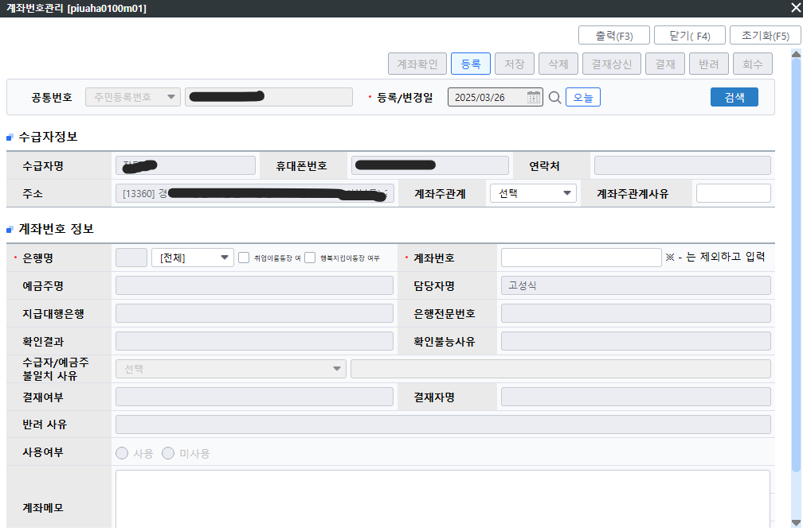
계좌주관계 -> 본인
통장사본상의 은행명 계좌번호 입력 후 [등록]클릭-활성화된 [계좌확인]클릭 5초후 아래내용 뜨면 [저장] 후 [닫기]
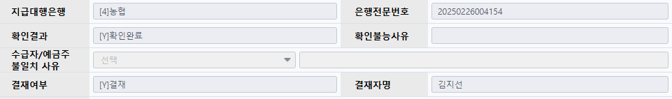
해당 내용까지 진행 완료후 [저장]-[민원접수요청]-[검토요청]까지 진행
4-1-5. 1유형 상담일지 작성 예시
[취업활동계획수립 기간 / 취업활동계획 수립]
상담시간 1828~1904
[취업활동계획수립 기간 / 취업활동계획 수립 ]
- 상담목표 구체화(취업활동계획 수립) 및 조정
- 구직촉진수당 지급신청서 안내 및 작성(처리기한 안내)
- 최종 취업활동계획을 수립하고 성실히 수행하겠다는 자필 서명을 함
- 3회차, 4회차 기간중 중 1회 대면상담과 취업지원서비스 기간 내에 최종 3개월은 집중 취업알선 기간 운영 계획임을 다시 설명함
- 수급자격자의 취업 및 창업 희망조건
* 희망직종 : 데이터 분석가(빅데이터 분석가) / 웹 개발자(웹 엔지니어·웹 프로그래머)
* 희망근무지 : 서울 / 경기
* 희망임금 : 미지정 / 면접 후 결정 가능
* 근무가능시간 : 미지정
- 현재 근로상황 : 편의점 아르바이트 진행중이나 팔 부상으로 8월만 미근로[취업지원 프로그램 활동 계획]
- 직업훈련 :
1. 훈련기관: ㅇㅇㅇㅇㅇ개발원
2. 훈련과정: ㅇㅇㅇㅇㅇ(JAVA) 풀스택 개발자 취업캠프
3. 훈련기간: 2025-00-00 ~2026-00-00(실제훈련기간 : 2025-07-21 ~2026-02-10)
[구직활동지원 프로그램 활동계획]
- 입사지원서 제출: 훈련수료일 다음날부터 월 2회이상하기로 계획함
- 입사지원 컨설팅: 훈련수료일 다음날부터 1달 이내에 1회 진행하기로 함
[1회차 구직촉진수당 신청]
- 소득발생내역 확인함* 500,000원 / 근로소득_편의점아르바이트_0월분 / 2025.00.00
- 취업예정없음을 확인함
- 가족수당 신청대상 가구원 없음을 확인함
- 처리기한 안내함
[상담 내용]
- 해당참여자는 ㅇㅇㅇ대학교 ㅇㅇㅇㅇㅇㅇㅇㅇ학과 졸업예정(2000.00)임, 희망직무는 경력이 없음을 확인함
- 취업지원 서비스 기간은 수급인정 통지일로부터 1년으로 정함
- 2회차 지정일 및 구직촉진수당 지급요건에 대해 설명함
- 문의사항이나 변동사항 발생시 연락달라고 함
4-2. 2유형 취업활동계획 수립(IAP 수립)
*훈련미참여자의 경우
입사지원서 제출 : IAP수립 다음날부터~서비스 종료일까지 월 2회로 설정
입사지원에 필요한 컨설팅 참여 : IAP수립 후 2개월되는 시점에 1달기간잡고 1회 진행으로 설정
이후 [IAP 등록완료]
*훈련참여자의 경우
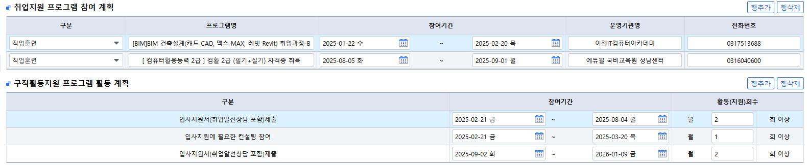
입사지원서 제출 : 훈련수료다음날부터 서비스 종료일까지 월 2회로 설정
입사지원에 필요한 컨설팅 :
-> (종일, 주5일의 경우) 훈련수료다음날부터 1달이내 1회로 설정
-> (훈련기간중 방문가능한 일정의 훈련인 경우) IAP수립 후 2개월되는 시점에 1달기간잡고 1회 진행으로 설정
이후 [IAP 등록완료]
4-2-1. 2유형 취업활동계획 수립후 참여수당 신청
취업지원서비스기간 시작 후 IAP수립일 전까지 고용센터 등에서 대면으로 진행하는 구직자역량강화프로그램 수료이력 있는 경우, [IAP등록/관리]-[취업지원/구직활동]-[근로의욕/취업기술 향상 프로그램]에서 사전에 등록
[고용24알선]
상담시간 1405~1436
[취업활동계획수립 기간 / 취업활동계획 수립]
- 상담목표 구체화(취업활동계획 수립) 및 조정
- 최종 취업활동계획을 수립하고 성실히 수행하겠다는 자필 서명을 함
- IAP 수립일 다음날로부터 2개월 3개월 되는 시점중에 1회 구직활동 재진단을 위해 대면 상담 진행함을 안내함
- 취업지원서비스 기간 내에 최종 3개월은 집중취업알선 기간 운영함을 설명함
- 수급자격자의 취업 및 창업 희망조건
* 희망직종 : 미용사
* 희망근무지 : 서울 / 경기
* 희망임금 : 면접 후 결정 가능
* 근무가능시간 : 00:00~00:00
*취업지원 프로그램 활동 계획
- 직업훈련 :
1. 훈련기관: 000헤어아카데미ㅇㅇ점학원
2. 훈련과정: 미용사(일반) ㅇㅇ 국가자격증 과정
3. 훈련기간: 2000-00-00~2000-00-00(0회차)
[구직활동지원 프로그램 활동계획]
- 입사지원서 제출: 훈련수료일 다음날부터 서비스종료일까지 월 2회이상하기로 계획함
- 입사지원 컨설팅: 훈련수료다음날부터 1달 이내에 1회 진행하기로 함
[취업활동계획수립 참여수당 신청]
- 참여수당 신청서 작성함
- 대면 취업특강수료이력 없음을 확인함
- 처리기한 안내함
[상담 내용]
- 상기 수급자격자는 미용사로 취업을 희망함, 미용사 직무로 취업을 위해서 직업 훈련 신청 및 00.00부터 훈련참여 예정임
- 취업지원서비스기간은 인정통지일로부터 1년으로 정함
- 변동사항 및 문의사항 발생시 연락달라고 안내함
4-2-3. 2유형 상담일지 작성 예시(훈련미참여)
[취업활동계획수립기간 / 취업활동계획수립 / 참여수당신청]
상담시간 1111~1212
[취업활동계획수립 기간 / 취업활동계획 수립]
- 상담목표 구체화(취업활동계획 수립) 및 조정
- 최종 취업활동계획을 수립하고 성실히 수행하겠다는 자필 서명을 함
- IAP 수립일 다음날로부터 2개월 3개월 되는 시점중에 1회 구직활동 재진단을 위해 대면 상담 진행함을 안내함
- 취업지원서비스 기간 내에 최종 3개월은 집중취업알선 기간 운영함을 설명함
- 수급자격자의 취업 및 창업 희망조건
* 희망직종 : 도시 계획·설계가
* 희망근무지 : 지역무관
* 희망임금 : 연봉 5,000만원 / 면접 후 결정 가능
* 근무가능시간 : 09:00~18:00
[구직활동지원 프로그램 활동계획]
- 입사지원서 제출: IAP 수립 다음날부터 서비스종료일까지 월 2회 이상하기로 계획함
- 입사지원 컨설팅: IAP수립 후 2개월 되는 시점에 1회 진행하기로 함
[취업활동계획수립 참여수당 신청]
- 참여수당 신청서 작성함
- 대면 취업특강수료이력 없음을 확인함
- 처리기한 안내함
[상담 내용]
- 상기 수급자격자는 도시 계획·설계가를 망하며 경력이 없음을 확인함.
- 참여자는 석사 수료 예정으로 현재 보유중인 역량을 바탕으로 구직활동 진행 후 상황에 따라 추가적인 훈련과정 탐색해 보기로 함
- 문의사항이나 변동사항 있으면 연락달라고 안내함
4-3. 참여자 관리 사이트 수정(1유형+2유형)
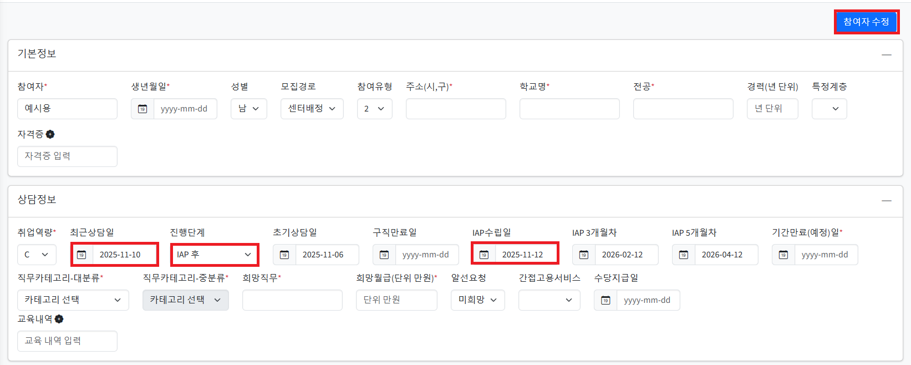
http://jobmoaa.mycafe24.com/login.do [잡모아 참여자 관리 사이트]에서 (1)최근상담일, (2)진행단계, (3)IAP수립일 변경 및 입력 후 [참여자 수정] 클릭
5. 알선
알선 진행 시 참여자의 지원의사 확인은 필수로 진행
알선 진행에 따른 증빙자료 확보 필수!
5-1. 고용24 알선
고용24 알선 진행 시 증빙자료
알선장
채용공고
채용정보제공내역+지원의사 확인 답변(카톡캡처본)
->3) 채용정보제공내역 캡처 시, 참여자의 지원의사 있다는 답변까지 받아서 캡처 *유선으로 지원의사 확인했더라도 카톡에 지원의사 있다고 한번 더 답장받기
5-1-1. 알선진행 및 증빙자료
채용정보제공이 고용24를 통해 참여자의 희망직무에 맞게 제공 됐음을 전제
3)채용정보제공내역+지원의사 확인 답변(카톡캡처본) 확보
제공한 채용공고 아래쪽에 [인증기관 정보]-[구인인증번호] 복사
알선진행할 참여자의 [구직인증번호]를 클릭하여 팝업창에서 [알선] 클릭
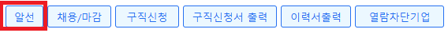
-[구직알선(상용)] 화면에서 [구인지정알선] 탭 클릭, 아래화면처럼 복사한 [구인인증번호] 붙여넣기 후 [검색]클릭, 상담내용에 내용 입력 후 요청경로 : [센터알선] 선택 후 [알선]클릭
이후 화면에서 상담내용에 내용 입력 후 [알선장 발행] 클릭하여 출력 후 2), 3)과 함께 실물로 참여자 파일에 보관
5-1-2. 고용24 알선 상담일지(예시, 유선)
[고용24알선]
상담시간 1204~1212
[고용24알선]
- 회 사 명 : 동ㅇㅇㅇ(주)
- 직 무 : 화학공학 기술자 및 연구원
- 급 여 : 연봉 3,100만원
- 근무지 : 대전 대덕구
- 정보제공처 : 고용24
- 채용담당자 : ㅇㅇㅇ / 000-000-0000
- 참여자의 지원의사 확인하여 알선진행함
- 변동사항 및 문의사항 발생시 연락달라고 안내함
5-2. 외부구인정보소개(외부알선)
외부구인정보소개(외부알선) 진행 시 증빙자료
메일발송내용 or 입사지원내역(공고상 업체에 연락할 수단 없는 경우에만)
채용공고
채용정보제공내역+지원의사 확인 답변(카톡캡처본)
->3) 채용정보제공내역 캡처 시, 참여자의 지원의사 있다는 답변까지 받아서 캡처 *유선으로 지원의사 확인했더라도 카톡에 지원의사 있다고 한번 더 답장받기
5-2-1. 알선진행 및 증빙자료
채용정보제공이 고용24외의 수단을 통해 참여자의 희망직무에 맞게 제공 됐음을 전제
참여자에게 채용정보제공 + 참여자의 지원의사 확인 및 답변 확보
채용공고상 채용담당자에게 연락 가능한 수단 확인하여 연락 후 인재 추천 및 이력서 등 메일발송(가능시)
-[컨설팅상담]-[기타 컨설팅] 선택 후 알선진행한 업체명 [목표기업]에 입력 [상담내용]에 내용 입력(성남지점의 경우 외부알선 상담일지와 동일한 내용 기입) 후 스캔한 1)+2)+3) 파일을 [첨부파일]에 업로드
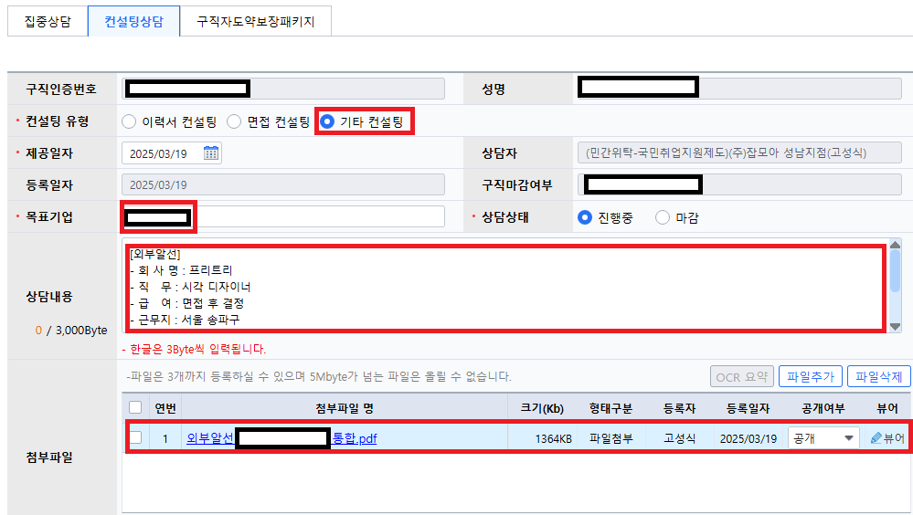
5-2-2. 외부구인정보소개(외부알선) 상담일지(예시, 유선)
[외부알선]
유선상담시간 1357~1402
[외부알선]
- 회 사 명 : ㈜ㅇㅇㅇㅇ
- 직 무 : ㅇㅇㅇㅇ
- 급 여 : 면접 후 결정
- 근무지 : 서울 ㅇㅇ구
- 정보제공처 : 사람인
- 채용담당자 : ㅇㅇㅇ / 000-0000-0000 / oooooo@oooooo.com
- 참여자의 지원의사 확인하여 알선진행함
- 채용담당자 통화 후 이력서 메일발송함
- 변동사항 및 문의사항 발생시 연락달라고 안내함
6. 각종 예시
유형별 최초 유선통화시 상담일지 작성예시
훈련참여지원수당 상담일지 작성예시
2회차 이상의 구직촉진수당 지정일 상담일지 예시
1유형 참여자 구직촉진수당 사전제출예약 동의 후 저장 안내카톡 예시
6-1. 최초 유선통화시 상담일지 작성예시(유형별, 활동별)
6-1-1. 1유형(사이버진로교육센터 온라인 교육)
[구직활동 확인 및 상담 / 채용정보제공]
유선상담시간 1018~1021
[상담내용]
- 해당참여자 취업활동계획대로 구직활동 이행중임을 확인함
- 사이버진로교육센터 온라인교육 이수에 대한 방법 안내함
- 직무 수행을 위한 훈련과정 탐색하여 상담진행하여 내일배움카드 발급 및 훈련과정 신청을 위해 방문하기로 함
- 구직촉진수당 지급요건 및 신청절차에 대해 안내함
- 변동사항이나 문의사항 발생시 연락달라고 안내함
[구직신청 내용에 적합한 채용정보제공]
- 회 사 명 : ㅇㅇㅇㅇ㈜
- 직 무 : 경영 기획 사무원
- 급 여 : 면접 후 결정
- 근무지 : 서울 ㅇㅇ구
- 정보제공처 : ㅇㅇㅇ
- 알선가능함을 안내함
- 검토 후 지원의사 답변해주기로 함
6-1-2 1유형(직업훈련 참여중)
[구직활동 확인 및 상담 / 채용정보제공]
유선상담시간 1132~1136
[상담내용]
- 참여자 취업활동계획에 따라 훈련에 성실히 참여중임을 확인함
- 참여자의 구직촉진수당 지급 요건 및 신청방법과 절차에 대해 안내함
- 성실한 훈련참여를 독려하고 변동사항 및 문의사항 발생시 연락달라고 안내함
[구직신청 내용에 적합한 채용정보제공]
- 회 사 명 : ㅇㅇㅇㅇ 주식회사
- 직 무 : ㅇㅇㅇㅇ
- 급 여 : 연봉 0,000만원
- 근무지 : 서울 ㅇㅇ구
- 정보제공처 : ㅇㅇㅇ
- 알선가능함을 안내함
- 검토 후 지원의사 답변해주기로 함
*주의사항
훈련참여자의 경우 출결상황 확인가능하므로 주기적으로 출석잘하고 있는지 모니터링 진행 필수!
6-1-3. 2유형
[취업지원 및 구직활동지원 프로그램 운영기간 안내/채용정보제공]
유선상담시간 1206~1210
[취업지원 및 구직활동지원 프로그램 운영기간 안내]
- 국민취업지원제도 취업지원 및 구직활동 프로그램 운영기간에 대해 안내함
- 훈련참여시 유의사항에 대해 안내하고 훈련참여지원수당 지급요건을 설명함[구직신청 내용에 적합한 채용정보제공]
- 회 사 명 : ㅇㅇ법인ㅇㅇㅇ
- 직 무 : ㅇㅇ 사무원
- 급 여 : 면접 후 결정
- 근무지 : 서울 ㅇㅇ구
- 정보제공처 : ㅇㅇㅇ
- 알선가능함을 안내함
- 검토 후 지원의사 답변해주기로 함
6-2. 훈련참여지원수당 상담일지 작성 예시
6-2-1. 내일배움카드 훈련과정 참여시
[1회차 훈련참여지원수당 신청 / 채용정보제공]
유선상담시간 1321~1324
[훈련참여지원수당 1회차 신청]
- 미근로
- 직업훈련 :
1. 훈련기관: ㅇㅇㅇㅇ교육원
2. 훈련과정: oooooo 취업과정
3. 단위기간: 2001-10-08~2001-11-07(훈련일수 20일, 결석1일, 조퇴1일 지각2일, 질병승인2일)
- 훈련 80%이상 출석하였으며, 훈련참여지원수당 신청서 제출 함
- 훈련장려금 외 별도의 수당 받은 사실이 없음을 확인함
- 수당 지급 처리기한을 안내함
[구직신청 내용에 적합한 채용정보제공]
- 회 사 명 : ㈜ㅇㅇㅇㅇ
- 직 무 : ㅇㅇㅇ
- 급 여 : 면접 후 결정
- 근무지 : 서울 ㅇㅇ구
- 정보제공처 : ㅇㅇㅇ
- 알선가능함을 안내함
- 검토 후 지원의사 답변해주기로 함
6-2-2. 미인정과정 참여시
[1회차 훈련참여지원수당 신청 / 채용정보제공]
유선상담시간 1114~1117
[훈련참여지원수당 1회차 신청]
- 미근로
- 직업훈련 :
1. 훈련기관: ㅇㅇㅇㅇㅇㅇ학원
2. 훈련과정: ㅇㅇㅇㅇ
3. 훈련기간: 2005-02-28~2005-03-27 (훈련일수20일, 질병승인3일)
- 참여자 미인정과정 훈련참여중으로 출석부 전달받아 출석확인함
- 훈련 80%이상 출석하였으며, 훈련참여지원수당 신청서 제출 함
- 별도의 수당 받은 사실이 없음을 확인함
- 수당 지급 처리기한을 안내함
[구직신청 내용에 적합한 채용정보제공]
- 회 사 명 : ㅇㅇㅇㅇ(주)
- 직 무 : ㅇㅇㅇㅇㅇㅇ
- 급 여 : 회사내규에 따름 / 면접 후 결정
- 근무지 : 서울 ㅇㅇ구
- 정보제공처 : ㅇㅇㅇ
- 알선가능함을 안내함
- 검토 후 지원의사 답변해주기로 함
6-3. 구직촉진수당 지정일 상담일지 예시(2회차 이후)
6-3-1. 구직촉진수당 지정일 상담일지(온라인교육)
[2회차 취업활동이행보고 및 검토승인 / 인터넷 신청 승인 / 채용정보제공]
유선상담시간 0000~0000
[2회차 취업활동이행보고 및 검토승인]
-지원대상기간 : 2004.03.10~2004.04.09
-지원대상기간 취업활동 보고서 제출하였고 검토함
* 취업지원 프로그램 활동
- 사이버진로교육센터 온라인교육 2회 수료함
- 2004.03.11 시선을 사로잡는 서류전형 수료
- 2004.03.11 마음을 사로잡는 서류전형 수료
- 구직활동 2회에 해당됨을 설명함
[구직촉진수당 인터넷 신청 승인]
- 소득발생 및 취업예정 없음을 확인함
- 가족수당 지급대상 가구원 없음을 확인함
- 처리기한 안내함
- 3회차 지정일 및 수당지급요건 확인 안내함
- 문의사항이나 변동사항이 있으면 연락달라고 안내함
[구직신청 내용에 적합한 채용정보제공]
- 회 사 명 : ㅇㅇㅇㅇㅇㅇ(주)
- 직 무 : ㅇㅇㅇㅇ 기술자
- 급 여 : 면접 후 결정
- 근무지 : 서울 ㅇㅇ구
- 정보제공처 : ㅇㅇㅇ
- 알선가능함을 안내함
- 검토 후 지원의사 답변해주기로 함
6-3-2. 구직촉진수당 지정일 상담일지(훈련참여)
[2회차 취업활동이행보고 및 검토승인 / 인터넷 신청 승인 / 채용정보제공]
유선상담시간 0000~0000
[2회차 취업활동이행보고 및 검토승인]
-지원대상기간 : 2004.03.10~2004.04.09
-지원대상기간 취업활동 보고서 제출하였고 검토함
* 취업지원 프로그램 활동
- 직업훈련
1. 훈련과정명 : ㅇㅇㅇ 취업 과정
2. 훈련기관명 : ㅇㅇㅇㅇㅇㅇ학원
- 지원대상기간 내 수업일수 10일이상. 출석율 80%이상 이행 확인함
- 구직활동 2회에 해당됨을 설명함
- 출석부 당일 수업끝나고 학원에 요청하여 전달해주기로 함[구직촉진수당 인터넷 신청 승인]
- 소득발생 내역 확인함* 316,000 / 취업지원프로그램_훈련장려금 / 2004.03.25
- 취업예정없음을 확인함
- 가족수당 신청 대상 가구원 없음을 확인함
- 처리기한 안내함
- 다음회차 구직촉진수당 지급요건 안내함
- 문의사항이나 변동사항 발생시 연락달라고 안내함
[구직신청 내용에 적합한 채용정보제공]
- 회 사 명 : ㈜ㅇㅇㅇㅇㅇ
- 직 무 : ㅇㅇㅇㅇ
- 급 여 : 연봉 0,000만원
- 근무지 : 서울 ㅇㅇ구
- 정보제공처 : ㅇㅇㅇ
- 알선가능함을 안내함
- 검토 후 지원의사 답변해주기로 함
6-3-3. 구직촉진수당 지정일 상담일지(입사지원2건)
[2회차 취업활동이행보고 및 검토승인 / 인터넷 신청 승인 / 채용정보제공]
유선상담시간 0000~0000
[2회차 취업활동이행보고 및 검토승인]
-지원대상기간 : 2004.03.10~2004.04.09
-지원대상기간 취업활동 보고서 제출하였고 검토함
*구직활동지원 프로그램 활동
* 입사지원서 제출 : 04.07 ㅇㅇㅇㅇ해장국, ㈜ㅇㅇㅇㅇ
- 구직활동 2회에 해당됨을 설명함
[구직촉진수당 인터넷 신청 승인]
- 소득발생 내역 확인함(총금액 : 000,000원)* 000,000원 / 근로소득_일일 아르바이트 급여 정산_ㅇㅇㅇㅇ / 2004.03.22* 000,000원 / 근로소득_일일 아르바이트 급여 정산_ㅇㅇㅇㅇ / 2004.03.29* 000,000원 / 근로소득_일일 아르바이트 급여 정산_ㅇㅇㅇㅇ / 2004.04.01
- 취업예정 없음을 확인함
- 가족수당 지급대상 가구원 2명을 확인함
- 처리기한 안내함
- 다음회차 지정일 및 수당지급요건 확인 안내함
- 문의사항이나 변동사항이 있으면 연락달라고 안내함
[가족수당 신청 대상 가구원]
- 가족수당 신청 대상 가구원 2명(만 18세 이하 2명) 확인함
- 주민등록 등본상 변동 가구원 없음을 확인함
- 국민취업지원제도 참여중이 아님을 확인함
[구직신청 내용에 적합한 채용정보제공]
- 회 사 명 : ㈜ㅇㅇㅇㅇㅇ
- 직 무 : ㅇㅇㅇㅇ
- 급 여 : 연봉 0,000만원
- 근무지 : 서울 ㅇㅇ구
- 정보제공처 : ㅇㅇㅇ
- 알선가능함을 안내함
- 검토 후 지원의사 답변해주기로 함
6-4. 1유형 참여자 구직촉진수당 사전제출예약 동의 후 저장 안내카톡 예시
6-4-1. 구직촉진수당 신청 카톡 안내 (온라인 교육)
안녕하세요 김ㅇㅇ님
★사이버진로교육센터 온라인교육 수강 및 구직촉진수당 신청 안내 드립니다✨절대로✨✨★03.10~04.09☆✨✨ 꼭 이 기간안에 들으셔야 합니다.✨✨오늘 들으시면 안됩니다✨
https://www.work.go.kr/cyberedu/main.do
상기 링크로 접속하신 후
1. 마음을 사로잡는 면접전형 준비
2. 시선을 사로잡는 서류전형 준비
위 두가지 과정 들으시고 수료과정 가셔서 수료증을
인쇄-PDF로 저장 하시어 파일업로드 해주시면 됩니다.
★구직촉진수당 사전 제출 및 증빙자료 업로드
https://www.work24.go.kr/ua/z/z/1300/selectEmssRqutIntro.do
사이트 로그인 후 [취업지원]-[국민취업지원제도]-[Ⅰ유형 구촉수당신청]-[2회차] 제출
온라인교육2개 선택 후 증빙자료 업로드
★구직촉진수당은 사전에 제출예약 해놓는게 가능하므로 해당과정 두개 이수하시고 바로 2회차 신청 들어가셔서 사전제출예약 동의에 '예' 체크하시고 [저장]해두시면 지정일에 자동 제출됩니다.
6-4-2. 구직촉진수당 신청 카톡 안내 (훈련참여)
안녕하세요 김ㅇㅇ님의 구직촉진수당 2회차에 앞서 구직촉진수당 사전신청/저장 방법 안내드립니다.
★구직촉진수당 사전 제출 및 증빙자료 업로드
https://www.work24.go.kr/ua/z/z/1300/selectEmssRqutIntro.do
사이트 로그인 후 취업지원-국민취업지원제도-Ⅰ유형 구촉수당신청-
2회차 선택 후 아래 제출버튼 누르고 들어가셔서
직업훈련 참여 - 이행등록 선택 – 아래에 활성화된 보고내용에 훈련참여기간
2004.03.10~2004.04.09로 설정
-> 구직촉진수당 신청만 미리해주시면 출석부는 나중에 업로드 하실 수 있습니다.
★구직촉진수당은 사전에 제출예약 해놓는게 가능하므로 사전제출예약 동의에 '예' 체크하시고 [저장]해두시면 지정일에 자동 제출됩니다.
★되도록 미리 신청하시고 신청해놓으시면 제가 내용 확인이 가능하므로 확인요청해주시면 잘못된 부분 없는지 제가 체크해드리겠습니다
6-4-3. 구직촉진수당 신청 카톡 안내 (입사지원2건)
안녕하세요 김ㅇㅇ님의 구직촉진수당 3회차 구직촉진수당 사전신청/저장 방법 안내드립니다.
★구직촉진수당 사전 제출 및 증빙자료 업로드
https://www.work24.go.kr/ua/z/z/1300/selectEmssRqutIntro.do
사이트 로그인 후 취업지원-국민취업지원제도-Ⅰ유형 구촉수당신청--3회차 제출
입사지원서 제출 2회 ✔ 하고 두번 클릭
증빙자료 업로드
◈◉◈구직촉진수당(입사지원 2회)증빙서류 제출◈◉◈-필요서류: 1)입사지원내역(취업활동증명서)
2)지원한 해당 업체의 채용공고(2개)1. 고용24에서 지원했을 경우
고용24 간편인증 로그인 후 마이페이지>>입사지원내역>>선택저장/인쇄 클릭 후 PDF로 저장하여 업로드
채용공고는 인쇄하기>>PDF로 저장하여 업로드
2. 잡코리아 인크루트 사람인 등 외부구인사이트
로그인 후 마이페이지>>취업활동내역 증명>>인쇄하기>>>PDF로 저장후 업로드
채용공고 동일하게 인쇄하기 후 PDF로 저장하여 업로드
◈◉◈입사지원 증빙 올리실때 주의하실 점 알려드립니다.◈◉◈1. 지원직무=희망직무
김ㅇㅇ님의 경우 지망하시는 직무분야가 웹 개발자/모바일 애플리케이션 프로그래머로 되어 있으므로 이 중에서 지원하셔야 합니다.
고용24의 경우 직무분류가 상기 직무 중 하나로 분류되었는지 확인하시면 됩니다.
잡코리아 사람인 인크루트를 포함한 사이트의 경우 제목 혹은 상세내용에 표기되어 있는지 확인하시면 됩니다.
2. 희망지역경기/서울로 설정되어 있으시므로 근무지역 혹은 근무예정지가 경기 혹은 서울권인 곳으로 지원하시면 됩니다
3. 신입/경력신입 혹은 경력무관으로 되어 있는 건으로 지원하셔야 합니다.
4. 학력사항4년대 대학 졸업이시므로 고졸/대졸(2,3년제)/대졸(4년제)/학력무관 으로 되어 있는 곳에 지원하셔야 합니다.